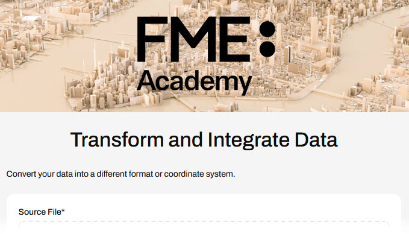
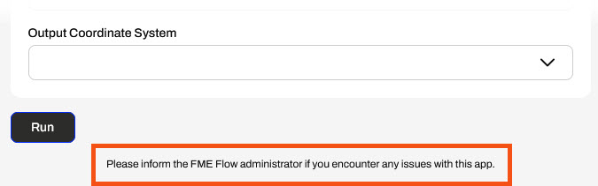
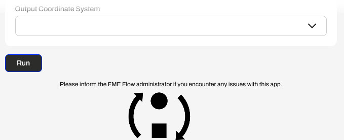
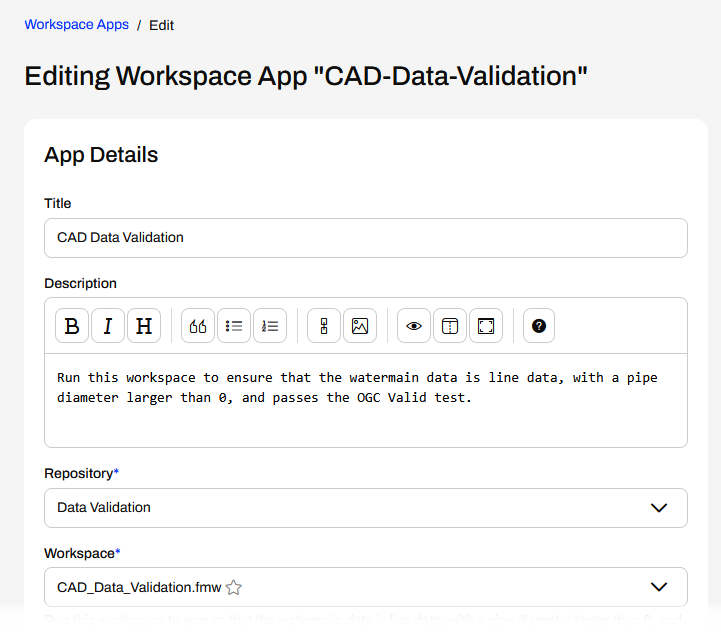
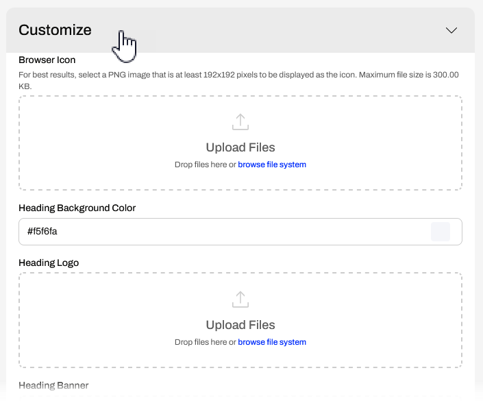
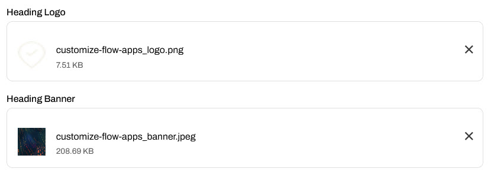

Learning Objectives
After completing this lesson, you'll be able to:
- Understand the various customization options for Flow Apps.
- Customize a Workspace App with icons and images.
Resources
The content used in this lesson builds on the previous lesson. To do this exercise, please complete the exercise in Transform Data with Workspace Apps.
If you're taking a live Safe Software-hosted training course or using an on-demand lab for this course, we've already imported the content for this lesson into your FME Flow.
If you're completing this lesson with your own FME Flow, you must import the starting project with the content into your FME Flow.
Expand for Steps to Import the Starting Project
2) Upload the
create_data_integration_apps.jceks encryption key to your FME Flow. This must be done by an fmesuperuser who has permission to System Configuration > Security > System Encryption. For more information, see our documentation on
System Encryption.
3) Navigate to your FME Flow and open Projects. Click Import.
5) The first step is Preview Content, where you may choose not to overwrite existing items. If all your items are New Items, you don't need to worry about overwriting existing items. Click Continue.
6) The next step is to select connections and tokens to import. This project doesn't contain any connections, parameters, tokens, or users to import. Click Continue through Step 2 and Step 3. Click Import Project on Step 4. The project will import and display its import status from the same page.
If the project import failed, check that you uploaded the encryption key and repeat the process. If the issue persists, please contact us at train@safe.com.
Customizing Flow Apps
You can customize the appearance of FME Flow Apps in the Customize section when creating the app. The customization options are mostly the same for all the Flow Apps. You may change the colour, add logos, and set banner images to tailor your Flow App to match your organization's branding. Ultimately, you can customize your app so that it appears not to use FME at all.
| Browser Icon |
Sets the icon next to the app name in the browser tab (300 KB file size limit) |
 |
| Heading Background Color |
A banner of color spans the top of the app and fills the color behind the heading banner if it is transparent. |
 |
| Heading Logo |
Image or icon centered over the heading banner (1 MB file size limit) |
 |
| Heading Banner |
Image that covers the banner span of the top of the app page (1 MB file size limit) |
 |
| Footer Text |
Text that appears after the app content at the bottom of the app page |
 |
| Footer Logo |
An image or icon that appears beneath the footer text, centered on the footer banner (1 MB file size limit) |
 |
| Footer Banner |
An image that comprises the banner spans the bottom of the app page (1 MB file size limit) |
 |

The last two options in the Customize section are toggles to turn on Run Immediately and Log Debug. The Run Immediately option will run the workspace as soon as you open the app, without configuring any parameters. The Log Debug option logs more details of the workspace translation in the job log for troubleshooting purposes. Log Debug does impact workspace performance, so you should only use it when troubleshooting your workflows.
Exercise

Jennifer is continuing to work on her CAD-Data-Validation Workspace App. Before she shares it with her colleagues, she will customize it to reflect her organization's branding, rather than using the default FME Flow imagery.
Follow along with Jennifer's steps as she edits and customizes her Workspace App.
1) Edit Workspace App
Jennifer navigates back to the Edit Workspace App page for her CAD-Data-Validation app.

She scrolls down and opens the Customize section.

2) Customize Heading
Jennifer opens the File Explorer and navigates to the customize-flow-apps_logo.png (C:\FMEData\Resources\FlowApps\customize-flow-apps_logo.png). She drags the file and drops it into the Upload Files area for the Heading Logo.

She repeats this for the Heading Banner. She drags and drops the customize-flow-apps_banner.jpeg (C:\FMEData\Resources\FlowApps\customize-flow-apps_banner.jpeg) into the Upload Files area for the Heading Banner. She has now uploaded two images to customize her app.

3) Save and Open App
That is all Jennifer will customize for her app. She scrolls to the bottom of the page and clicks Save. Then she clicks the link to open her newly customized app.

Jennifer has now built and customized an FME Flow Workspace App that validates CAD data input and returns a validation report to the user.